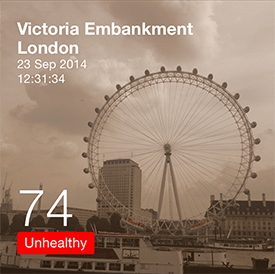
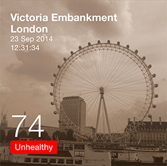

03/2014 - 09/2014
UX Design Intern at ICRI, Intel, in London
MSc Dissertation at UCL Interaction Centre
Supervised by Lorna Wall and Han Pham
Data Visualization, Mobile App Design, Research
People like taking photos.

Since the advent of smartphones, photo taking, sharing and enhancement apps have emerged. People spend more and more time on camera apps. They use these apps to take photos, to capture memorable moments, to tell stories and to convey messages.
People use photo filters to make these moments more beautiful
“ Did you ever wander what were happening in these beautiful pictures? How was the air quality there?
Findings from literature review & user interviews
Nitrogen dioxide (NO2) lacks visibility
Nitrogen dioxide (NO2) is a particular problem in London. UK has the highest levels of NO2 in Europe (Pollockm, 2014).
The problem is that it is hard for people to detect the NO2 pollution. The human nose is able to detect NO2 by odour, but it quickly gets accustomed to the smell (Kim et al, 2010). The human eyes cannot see it in the air, because NO2 is less visible compared to the other pollutants, such as particulate matter (the major pollutant in Beijing). Therefore, even if the concentration of NO2 in London is higher than in Beijing (Bloomberg, 2014), the pollution is less visible. People are less aware of the problem in London.
Participants were not aware of the severity of pollution problems in London.
Because not only pollutants are invisible, the health effects of air pollution are also hard to be linked to specific human behaviours. Participants had little knowledge of possible actions they could take to reduce exposure, and were not aware of the existing air quality data available.
Personal experience was a major factor to influence participants’ perceptions about air quality.
Bad experience with air quality would make participants notice pollution problems, triggers their interest to read more articles and come up with solutions to avoid or reduce pollution. However, due to the varied susceptibility to pollution levels at which health effects would be noticed, not everyone had poor experience with air quality.
Participants understood the air quality was bad via visual cues, such as photographs.
For example, when it looked grey outside of the window, or when windows became dirty. When they looked at London from a distance and saw the haze over the city, or when they saw photographs where only the roof of the buildings could be seen, again they would perceive this to show that the air quality was poor. However, as many pollutants are invisible, this visual check cannot be relied upon.
With visual representations, information is more engaging, more accessible, more persuasive, and easier to recall (NeoMam Studios, 2014).
Visual representations can increase people’s comprehension, learning and retention by over 70% (Green, 1989). Human beings can understand a visual scene in less than 0.1 second (Semetko & Scammell, 2012) and remember 80% of what they saw and did (Lester, 2006). People are therefore, easier to be persuaded, and more inclined to believe (McCabe & Castel, 2008).
Comparison is key to help people understand air quality
These works shows that, with isolated pictures, it is hard to gain a sense of how good or bad the air quality is. But with comparisons, it is easier to understand whether the data is good or not, and to understand the trends of air quality.
It is important to enable users to interpret the level of severity of air pollution to the experience in real life from reading the AQI number.
“ When I saw the number I can feel how good or bad the air quality level will be for today, because I’m used to it.
from P7, a Beijing resident, who has been using the China Air Quality Index App for two years.
Thinking about weather data. When you know it's 27°C tomorrow, you would reflect on what to wear, how would it feel in real life. It's the same for air quality data.
Participants were habitually checking weather data, but never checked air quality data. This interpretation does not exist amongest participants, thus, it needs to be assisted by the visualizaion.
DESIGN AND IMPLEMENTATION
InstaNO2, take photos to explore air quality
The app was designed as a camera app, which allowed people to explore the current NO2 level from places they were via an existing habitual behaviour, taking photos.
Designed as a camera app, adopted Instagram interfaces
A photo-based air quality visual representation

The app visualized air quality data using photograph as a medium and displayed numeric air quality data on top of the photo, with a green or red, healthy or unhealthy colour block.

Whilst not only information was displayed, the appearance of the photo would also be adjusted based on the air quality data. If the air quality was healthy, the photo would be brighter with blue sky and a clear view; if the air quality was unhealthy, the photo would be darker. In this way, the app made invisible pollutants visible, and made air quality data more explicit.
Location filters
Compare the current air quality data with other places.
Time filters
Compare the current air quality data with historical dates.
By applying photo filters, the app enabled users to compare the current air quality data with other locations and dates, and it also enabled users to talk and share air quality data instantly. The photo-based air quality data could be shared on social media, to a designed photo collection website and to the users’ My Places stream, for users to check the real-time air quality at places they had been to.
My Places
Photos captured by the app would also go to the user’s My Places stream. This feature was designed for users to check real-time air quality at places they had been to.
Key Features
#1 Take photo to explore air quality
#2 Make the invisible visible via photographs
#3 Explore and compare air quality data using photo filters
#4 Talk and share air quality data instantly
#5 Motivate people to check air quality
#6 Extensibility
Findings from literature review & user interviews
The app is easy to use. Participants were using the app just like using other camera apps.
“ People like taking photos. It’s easy to do.” (E3)
“ I like the camera interface. Users don’t have to learn a new interface.” (E4)
Photographs visualized the effects of air pollution that could affect the person.
“I think colour is enough to represent the current air quality. But photos made it more real, and give you a sense of how good or bad it might affect you. When I see the current picture applied with a poor air quality filter, I feel dirty and a little uncomfortable, and I want to move away from that place soon.” (E5)
It's easy to tell the difference between the first and the second images, because one says healthy and the other says unhealthy. But it's difficult to tell the difference between the second and the third images. Only using numbers and red colours, the difference between 300 μg/ m3 and 400 μg/m3 could not be felt. But the photographs and photo filters visualized the difference between numbers and enabled participants see the severity of air pollution visually by adjusting the appearance of photos, thus it made the air quality data on top of photos understandable.
Location filters and time filters allowed participants to compare air quality data in two dimensions.
Rather than isolated numbers, with comparisons the spatial and temporal variations provide contexts that make it more obvious and easier to understand.
Most of the participants had no idea what air quality data looked like during the pre-study interview. While playing with the app, participants went to places to understand the air quality they were exposed to, and began to think about what air quality meant, where the pollution came from, what might change the air quality and why it was changing.
All participants were surprised to see that the peak time data at Oxford Street (463 μg/m3) was ten times higher than the EU limit (40 μg/m3). They liked the fact that nothing could be seen through the filter any more.
“ I noticed the air quality is far better in the winter.” (E7)
Participants asked for more explanations about the data. Although the app didn’t provide them with explanations, they expressed their own initiative to interpret and explore the data further to learn more. This shows that the app can spark curiosity, trigger exploration and raise awareness of air quality issues.
“ I brought the pollution to London, xD” (E5)
E5 chose a time filter of the last year, because he was not here last year, and he wanted to compare the current air quality with the last year’s air quality. He made a joke, even when he saw that he was facing a poorer air quality than last year.
Final Presentation
If you are interested to read the dissertation,
Drop me an email :)
03/2014 - 09/2014
UX Design Intern at ICRI, Intel, in London
MSc Dissertation at UCL Interaction Centre
Supervised by Lorna Wall and Han Pham
Visualization, Mobile App Design, Research
Bloomberg (2014). London’s Dirty Secret: Pollution Worse Than Beijing’s.
Green, R. (1989). The Persuasive Properties of Color, Marketing Communications.
Guler, D. (2012). FloatPM. Interactive Art and Computational Design.
Kim, S., Paulos, E. & Gross, M. (2010). WearAir: Expressive T-shirts for Air Quality Sensing, TEI 2010, January 25–27, 2010, Cambridge, Massachusetts, USA
Lester, P. M. (2006). Syntactic Theory of Visual Communication.
McCabe, D. P., & Castel, A. D. (2008). Seeing is believing: The effect of brain images on judgments of scientific reasoning. Cognition, 107(1), 343-352. doi: Doi 10.1016/J.Cognition. 2007.07.017
NeoMam Studios (2014) 13 Reasons Why your Brain Craves Infographics.
Semetko, H. A., & Scammell, M. (2012). The SAGE handbook of political communication. London ; Los angeles ; Thousand Oaks, California ; New Delhi ; Singapore: SAGE Publications Ltd.
The Atlantic (2012). A Stunning Visualization of China's Air Pollution.